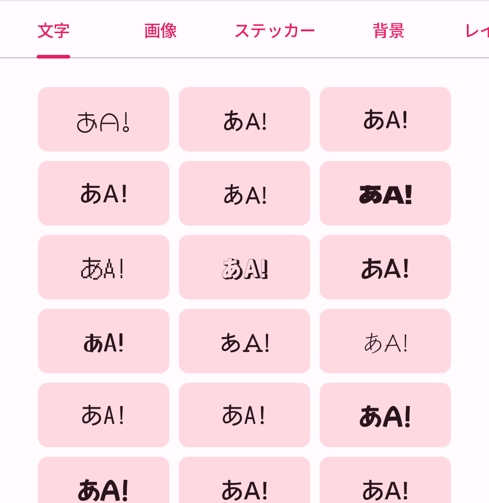
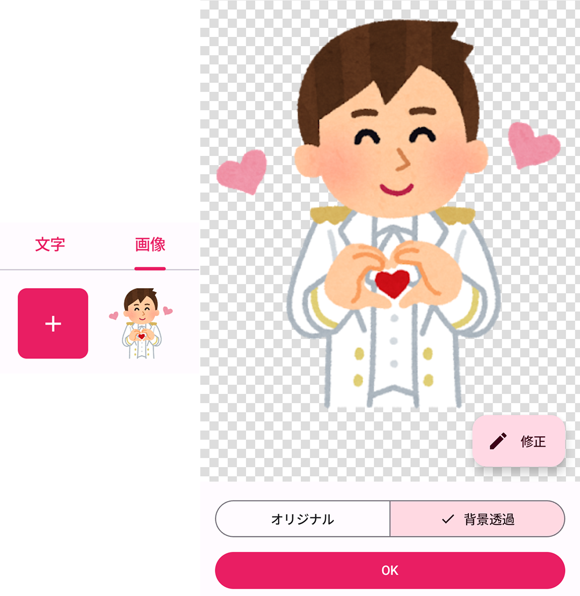
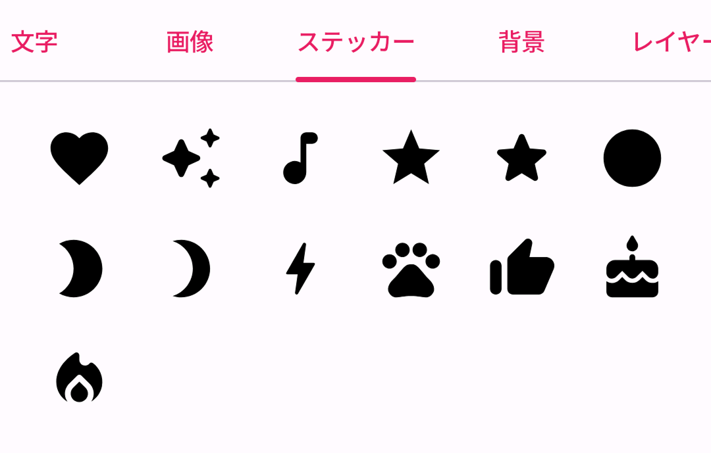
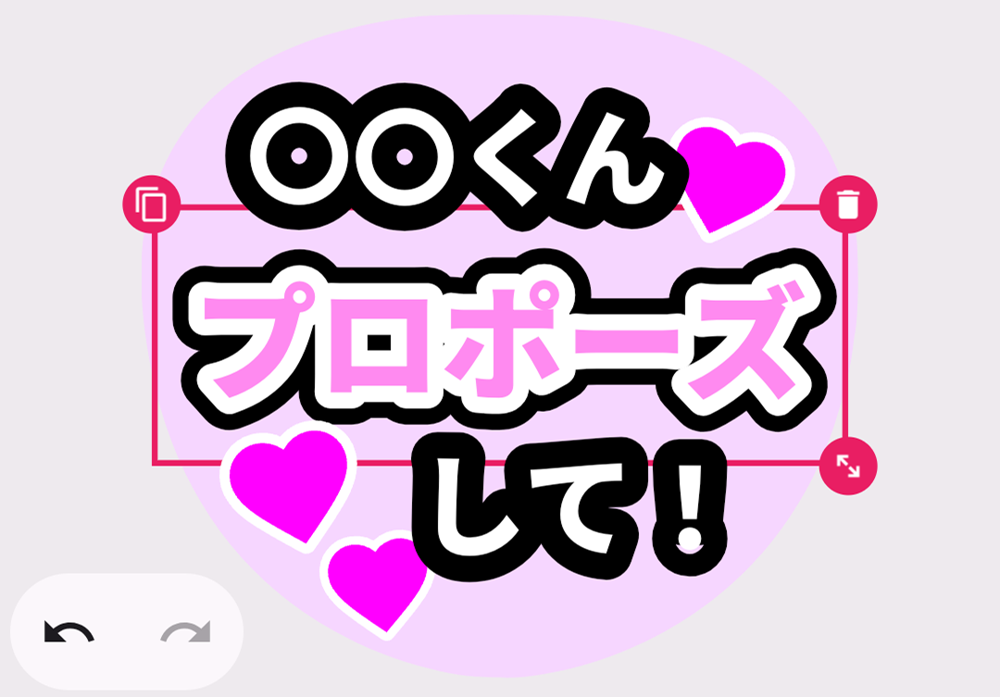
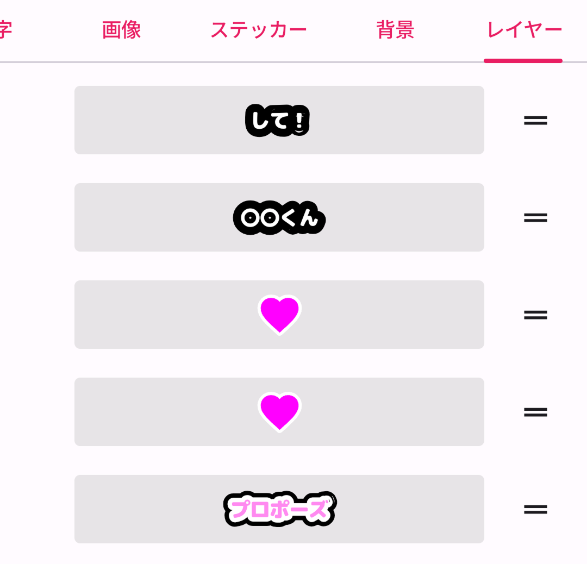
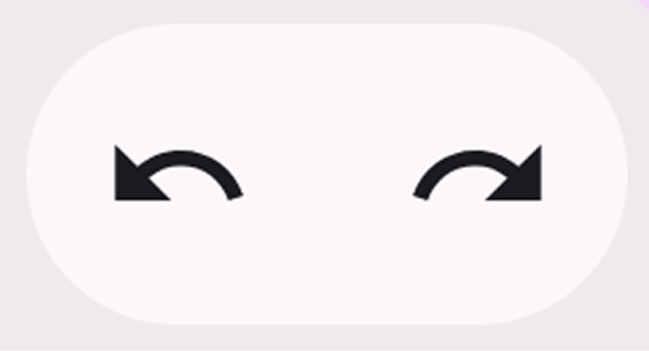

1
テキストを追加する
画面下部の「文字」タブで、追加したいテキストのフォントを選択すると文字が追加できます。
- テキスト編集: テキストをタップして選択した状態でもう一度タップすると、テキストを編集できます。
- フォント変更:テキストをタップして選択した状態でフォントを選択すると、テキストはそのまま、フォントだけ変更できます。

画面下部の「文字」タブで、追加したいテキストのフォントを選択すると文字が追加できます。

スマホのギャラリーから、好きな画像をうちわに配置できます。

アプリ内蔵の可愛いステッカーを使って、うちわを華やかにデコレーションできます。

配置したアイテムは、後からいつでも編集可能です。

うちわの土台となる背景色を変更します。
配置したアイテム（文字や画像、ステッカーなど）の重なり順を変更できます。

間違えてしまった時や、元の状態に戻したい時に、操作を取り消すことができます。
